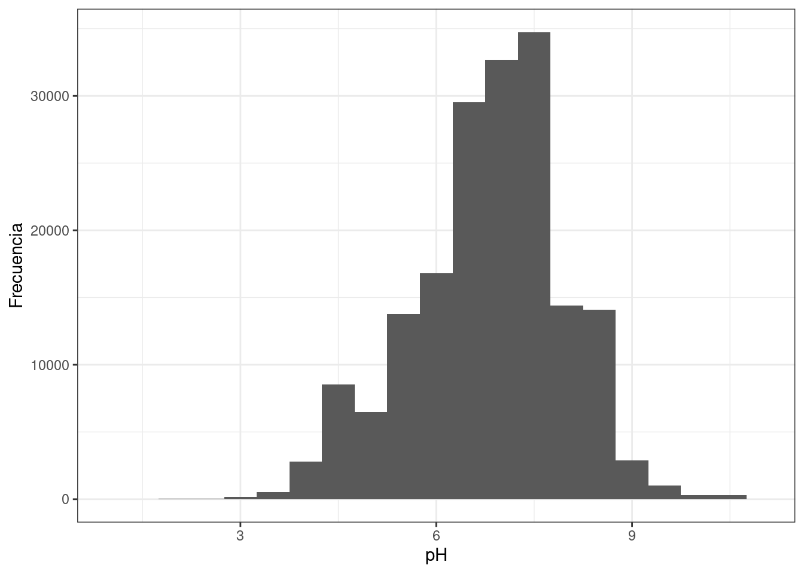
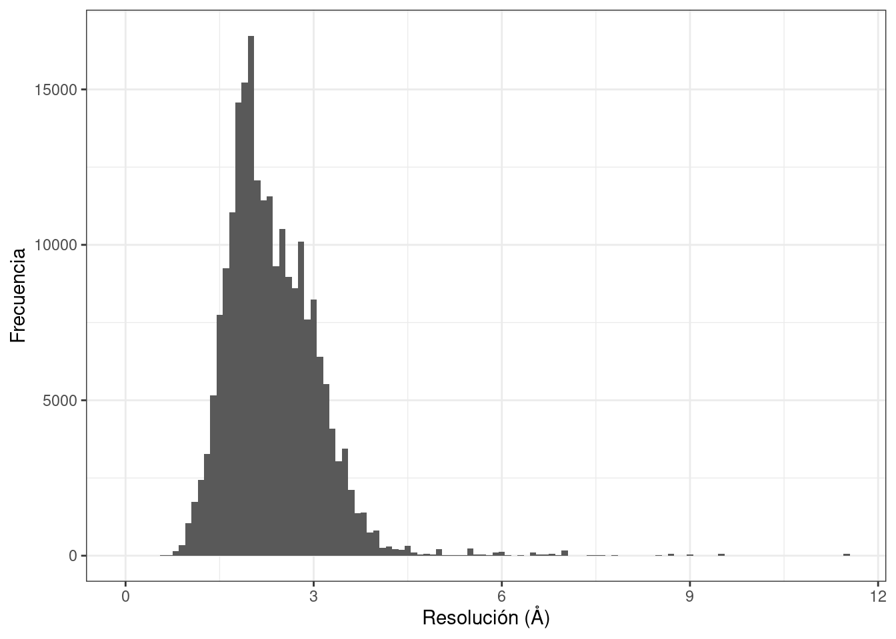
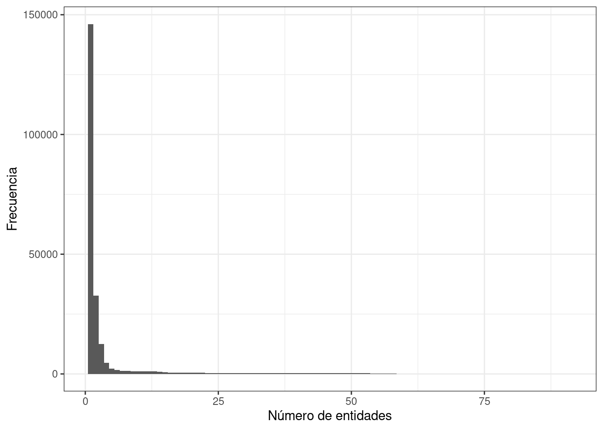
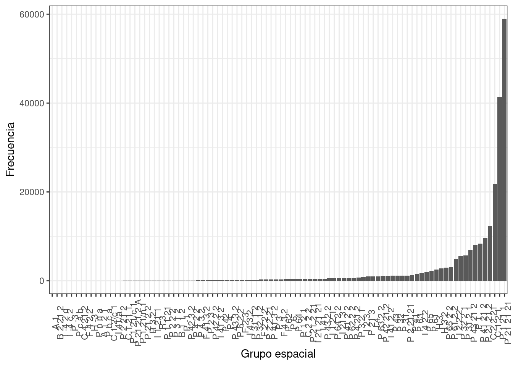

3 Extracción de datos
3.1 Método anterior
En un inicio la extracción de datos se realizó por medio de la interfaz de programación de aplicaciones (API, por sus siglas en inglés) del banco de datos de proteínas (PDB, también por sus siglas en inglés), basado en una ‘búsqueda avanzada’ en formato .xml, como lo describo en el siguiente enlace https://murpholinox.github.io/getdatafromthePDB/.
3.2 Cambios
A finales del 2019, se implementó una nueva API en el sitio web del PDB que no permitió seguir con el proceso anterior, al introducir ciertas restricciones. Por lo menos a esta fecha, 30 de mayo 2020, las restricciones continúan y son las siguientes:
- Después de una ‘búsqueda avanzada’, no es posible descargar el archivo
.csvde los resultados de la búsqueda con un número mayor a 2500 líneas.
Restricciones en el PDB
- Después de una ‘búsqueda avanzada’, la opción de descargar un
.csvpersonalizado, es decir, con la posibilidad de seleccionar las columnas de interés, no se encuentra disponible.
3.3 Nuevo método
A causa de lo anterior se decidió emplear la información cruda del PDB, es decir, extraer la información directamente del cabezal de los archivos de las estructuras depositadas en el PDB.
3.3.1 Escoge formato
El PDB ofrece descargar sus archivos en tres formatos diferentes: .xml, .pdb y .mmcif. El segundo es el más fácil de leer y manipular; sin embargo, se decidió usar el tercer formato debido al siguiente párrafo:
Many of the errors have been fixed in the equivalent mmCIF files. Hence, if you are interested in the header information, it is a good idea to extract information from mmCIF files…
De https://biopython.readthedocs.io/en/latest/chapter_pdb.html.
3.3.2 Conoce el formato
El formato .mmcif se detalla en http://mmcif.wwpdb.org/. Existe una correspondencia entre las etiquetas del .pdb con las del .mmcif.
El formato
.mmcif, tiene como fin reemplazar el formato.pdb(véase http://mmcif.wwpdb.org/docs/faqs/pdbx-mmcif-faq-general.html).
3.3.3 Descarga la información
Para descargar todo las estructuras del PDB en formato .mmcif, se usa el siguiente comando:
cd /run/media/murphy/lolita/doctorado # Trabaja en el disco duro.
rsync -rlpt -v -z --delete --port=33444 rsync.rcsb.org::ftp_data/structures/divided/mmCIF/ ./PDB
# Tarda 725 minutos!Instrucciones de https://www.wwpdb.org/ftp/pdb-ftp-sites.
3.3.4 Organización de la información
Las estructuras están organizadas en diferentes subdirectorios, cuyo nombre está formado por el segundo y el tercer carácter del nombre del archivo .mmcif. Por ejemplo 1abc.mmcif estará en el subdirectorio ab/. Para las pruebas se hace una copia de este directorio, sin los subdirectorios. Esto tiene dos fines: realizar un respaldo y manipular de una manera más sencilla los archivos.
cd /run/media/murphy/lolita/doctorado
mkdir PDB_backup
cd PDB/
time find . -name '*.gz' -exec cp \{\} /run/media/murphy/lolita/doctorado/PDB_backup/ \;
# Esto tarda 36 minutos!
# Se confirma con:
# cd ../PDB_backup/
# find -name "*.gz" | wc -l
# 164391Los archivos descargados están comprimidos en formato gzip (https://www.gnu.org/software/gzip/). No es necesario descomprimirlos.
3.3.5 Extracción de datos
La extracción de gemmi funciona de la siguiente manera:
# Obtiene número de acceso.
# time gemmi grep _struct_ref.pdbx_db_accession xrays/ > from_xrays_get_ide
# Esto tarda 83 minutos!
# Obtiene número de entidades.
# time gemmi grep _entity_poly.entity_id xrays/ > from_xrays_get_nde
# Esto tarda 73 minutos!
# Obtiene anteriores y tipo de entidad.
# time gemmi grep _struct_ref.pdbx_db_accession -a _entity_poly.entity_id -a _entity_poly.type xrays/ > from_xrays_get_ide_nde_tde
# Esto tarda 75 minutos!
# Estos resultados no producen datos rectangulares, por la ausencia de un delimitador apropiado.3.3.5.1 Separa entradas por método experimental
Del universo de archivos depositados en el PDB, obtenemos aquellas estructuras determinadas por cristalografía de rayos-X (CRX). Esto ayuda a reducir confusiones posteriores. Estas confusiones surgen porque gemmi, extrae etiquetas pero no conoce contextos. Esto puede resultar, dependiendo de las etiquetas, en una producción de un archivo de texto con un número de columnas variable por línea, es decir, datos en forma no rectangular.
Advertencia: La mayor parte del
tidyversetrabaja con datos rectangulares, mismo número de columnas en todas las líneas, por lo que es esencial obtener datos de esta forma.
cd /run/media/murphy/lolita/doctorado/
mkdir extract
time gemmi grep _exptl.method PDB_backup/ > ./extract/method.dat # Esto tarda 74 minutos!
cd extract/
grep X-RAY method.dat | awk -F : '{print $1}' | tr '[:upper:]' '[:lower:]' > pdbs_by_xray.dat
sed 's/$/.cig.gz/'g pdbs_by_xray.dat > list_pdbs_by_xray
# Es interesante comparar el número de entradas por CRX contra el total:
# wc -l method.dat pdbs_by_xray.dat
# 164558 method.dat
# 146114 pdbs_by_xray.dat
# Es decir, 88.79 % de las entradas en el PDB son por CRX.
mkdir xrays
time cat list_pdbs_by_xray | while read line;
do cp /run/media/murphy/lolita/doctorado/PDB_backup/$line xrays/; done
# Esto tarda 49 minutos!3.3.5.2 Extrae datos
# El primer delimitador usado fue <TAB> (\t).
# time gemmi grep --delimiter='\t' _entity_poly.entity_id -a _entity_poly.type -a _struct_ref.pdbx_db_accession -a _entity.pdbx_description -a _exptl_crystal_grow.method -a _exptl_crystal_grow.pH -a _exptl_crystal_grow.pdbx_details -a _reflns.d_resolution_high -a _reflns_shell.d_res_high -a _symmetry.space_group_name_H-M -a _citation.pdbx_database_id_DOI xrays/ > todo
# Esto tarda 45 minutos!
# Estos resultados no producen datos rectangulares, por la presencia de <TAB> en la columna de la condición de cristalización.
# La solución es usar un delimitador que jamás podría aparecer en los archivos `.mmcif`.
cd /run/media/murphy/lolita/doctorado/extract
time gemmi grep --delimiter='¿' _entity_poly.entity_id -a _entity_poly.type -a _struct_ref.pdbx_db_accession -a _entity.pdbx_description -a _exptl_crystal_grow.method -a _exptl_crystal_grow.pH -a _exptl_crystal_grow.pdbx_details -a _reflns.d_resolution_high -a _reflns_shell.d_res_high -a _symmetry.space_group_name_H-M -a _citation.pdbx_database_id_DOI xrays/ > todo2
# Esto tarda 45 minutos!Importa los datos extraídos a R y los verifica.
todo2 <- read_delim("/run/media/murphy/lolita/doctorado/extract/todo2",
"¿", escape_double = FALSE, col_names = FALSE,
comment = "*>", trim_ws = TRUE)
# La configuración regional de mi sistema está en inglés, `R` también por lo que no reconoce '¿'.
pdb<-todo2$X1
nde<-stringr::str_replace(todo2$X2, '�', '')
tde<-stringr::str_replace(todo2$X3, '�', '')
ide<-stringr::str_replace(todo2$X4, '�', '')
nom<-stringr::str_replace(todo2$X5, '�', '')
tec<-stringr::str_replace(todo2$X6, '�', '')
peh<-stringr::str_replace(todo2$X7, '�', '')
con<-stringr::str_replace(todo2$X8, '�', '')
rs1<-stringr::str_replace(todo2$X9, '�', '')
rs2<-stringr::str_replace(todo2$X10, '�', '')
gpo<-stringr::str_replace(todo2$X11, '�', '')
doi<-stringr::str_replace(todo2$X12, '�', '')
datos<-data.frame(pdb, nde, tde, ide, nom, tec, peh, con, rs1, rs2, gpo, doi)
rm(pdb, nde, tde, ide, nom, tec, peh, con, rs1, rs2, gpo, doi)
# Cuidado con el tipo de las columnas.
datos$nde<-as.numeric(as.character((datos$nde)))
datos$peh<-as.numeric(as.character((datos$peh)))
datos$rs1<-as.numeric(as.character((datos$rs1)))
datos$rs2<-as.numeric(as.character((datos$rs2)))
# Verificamos los datos al graficar algunas variables interesantes:
theme_set(theme_bw())
# Histograma del pH.
ggplot(data = datos, aes(x=peh)) + geom_histogram(binwidth = 0.5) + labs(x="pH", y="Frecuencia") + xlim(1, 11)
# Histograma de la resolución.
ggplot(data = datos, aes(x=rs1)) + geom_histogram(binwidth = 0.1) + labs(x="Resolución (Å)", y="Frecuencia")
# Histograma del número de entidades.
ggplot(data = datos, aes(x=nde)) + geom_histogram(binwidth = 1) + labs(x="Número de entidades", y="Frecuencia")
# Determina cuentas por grupo de grupos espaciales y tido de entidad.
df1<-datos %>%
add_count(gpo, name = "cta_gpo")
df2<-df1 %>%
add_count(tde, name = "cta_tde")
tab_gpo<-datos %>%
count(gpo, name = "cta_gpo") %>%
arrange(desc(cta_gpo))
tab_tde<-datos %>%
count(tde, name = "cta_tde") %>%
arrange(desc(cta_tde))
# Gráfico de barras de los grupos espaciales.
ggplot(data = df1, aes(x=reorder(gpo, cta_gpo))) + geom_bar() + labs(x="Grupo espacial", y="Frecuencia") + theme(axis.text.x = element_text(angle = 90))
# Es interesante notar que el número de grupos espaciales es mayor a 65.
gpo_rar <- df2 %>%
filter(cta_gpo <= 15)
# Gráfico de barras de los grupos espaciales menos comunes.
ggplot(data = gpo_rar, aes(x=reorder(gpo, cta_gpo))) + geom_bar() + labs(x="Grupo espacial", y="Frecuencia", title = "Grupos espaciales con una frecuencia menor o igual a 15") + coord_flip()#+ theme(axis.text.x = element_text(size = 12, angle = 45)) 
# Genera tablas.
# Tabla de grupos espaciales en el PDB.
kable(tab_gpo) %>%
kable_styling(bootstrap_options = c("striped", "hover", "condensed", "responsive"), full_width=F)| gpo | cta_gpo |
|---|---|
| P 21 21 21 | 58553 |
| P 1 21 1 | 40925 |
| C 1 2 1 | 21183 |
| C 2 2 21 | 12353 |
| P 21 21 2 | 9612 |
| P 41 21 2 | 8377 |
| P 1 | 8087 |
| P 43 21 2 | 6933 |
| P 31 2 1 | 5678 |
| P 32 2 1 | 5497 |
| I 2 2 2 | 4805 |
| P 61 2 2 | 3107 |
| P 65 2 2 | 2964 |
| H 3 2 | 2778 |
| H 3 | 2510 |
| P 61 | 2319 |
| P 65 | 2040 |
| I 4 2 2 | 1738 |
| P 63 | 1474 |
| P 41 | 1246 |
| P 2 21 21 | 1168 |
| P 32 | 1153 |
| P 31 | 1146 |
| P 43 | 1125 |
| I 41 2 2 | 1088 |
| P 42 21 2 | 1046 |
| P 63 2 2 | 1010 |
| I 4 | 987 |
| P 21 3 | 948 |
| I 2 3 | 797 |
| P 3 2 1 | 734 |
| P 4 21 2 | 626 |
| P 62 2 2 | 591 |
| P 41 2 2 | 584 |
| I 21 3 | 561 |
| P 64 2 2 | 524 |
| I 1 2 1 | 514 |
| P 43 2 2 | 505 |
| I 41 | 484 |
| I 21 21 21 | 466 |
| P 21 2 21 | 465 |
| C 2 2 2 | 450 |
| P 1 2 1 | 437 |
| P 64 | 398 |
| P 6 | 388 |
| P 62 | 363 |
| F 4 3 2 | 322 |
| P 3 | 316 |
| P 41 3 2 | 293 |
| P 2 2 21 | 275 |
| F 2 2 2 | 272 |
| P 32 1 2 | 233 |
| P 31 1 2 | 214 |
| I 4 3 2 | 183 |
| F 2 3 | 175 |
| P 6 2 2 | 166 |
| P 43 3 2 | 163 |
| P 4 | 158 |
| P 42 | 153 |
| I 41 3 2 | 128 |
| P 42 2 2 | 119 |
| P 2 3 | 116 |
| F 41 3 2 | 102 |
| P 4 3 2 | 92 |
| P 4 2 2 | 76 |
| P 42 3 2 | 69 |
| P -1 | 44 |
| B 1 1 2 | 36 |
| P 3 1 2 | 35 |
| P 2 2 2 | 16 |
| P 1 1 21 | 15 |
| I 1 21 1 | 14 |
| R 3 | 14 |
| P 1 21/n 1 | 10 |
| P 21 2 2 | 10 |
| R 3 2 | 10 |
| P 21 21 2 A | 8 |
| C 1 21 1 | 7 |
| P 1 21/c 1 | 7 |
| C 1 2/c 1 | 4 |
| I 41/a | 4 |
| P 2 21 2 | 4 |
| A 1 2 1 | 3 |
| P b c a | 3 |
| C 4 21 2 | 2 |
| F 4 2 2 | 2 |
| H -3 | 2 |
| P n n a | 2 |
| A 1 | 1 |
| B 2 21 2 | 1 |
| I -4 2 d | 1 |
| I -4 c 2 | 1 |
| P -3 | 1 |
| P c a b | 1 |
# Tabla del tipo de entidades en el PDB.
kable(tab_tde) %>%
kable_styling(bootstrap_options = c("striped", "hover", "condensed", "responsive"), full_width=F)| tde | cta_tde |
|---|---|
| polypeptide(L) | 208248 |
| polydeoxyribonucleotide | 10845 |
| polyribonucleotide | 5268 |
| polydeoxyribonucleotide/polyribonucleotide hybrid | 171 |
| polypeptide(D) | 83 |
| peptide nucleic acid | 3 |
| other | 2 |